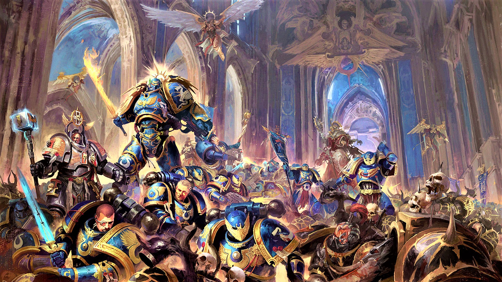

Warhammer 40K: Ultramarines
Welcome to the ultimate breakdown of the Ultramarines and their legacy following the Horus Heresy.
For ten thousand years, the Ultramarines have stood as paragons of honor, discipline, and tactical genius in the grim darkness of the far future.
Check out Games Workshop for more information and products.
The Ultramarines: Defenders of Humanity
The Ultramarines are the XIII Legion of the Adeptus Astartes, created during the Great Crusade by the Emperor of Mankind and led by their Primarch, Roboute Guilliman. Known for their strict adherence to the Codex Astartes and their unmatched discipline, they serve as the spiritual and organizational template for countless successor chapters.
Renowned for their versatility, the Ultramarines excel in every theater of war, from orbital assaults to grueling trench battles. Their homeworld of Macragge stands as a shining beacon of Imperial order, while their vast Ultramar system provides strength, resources, and manpower to the Imperium.
Whether defending the galaxy from Chaos incursions or leading crusades into the unknown, the Ultramarines embody the Emperor's vision of a perfect warrior brotherhood.